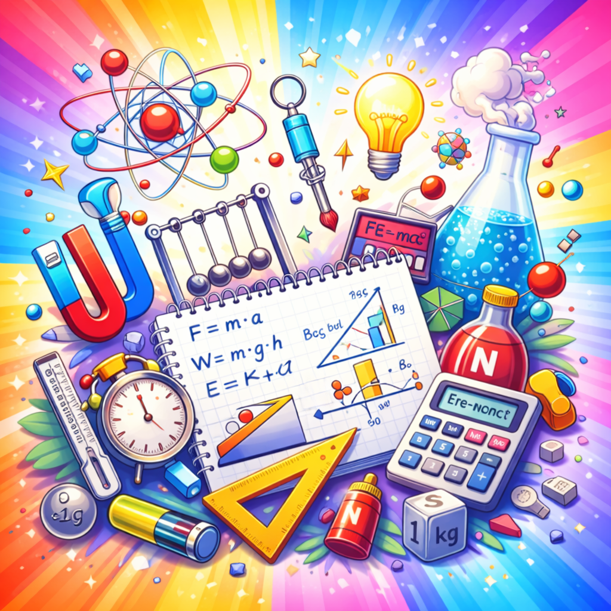

Πινγκ Πονγκ Φυσικής
Μια γρήγορη επανάληψη στη Φυσική της Β΄ Γυμνασίου.
Οδηγίες
🎯 Δύο παίκτες/τριες - ομάδες απαντούν εναλλάξ σε ερωτήσεις πολλαπλής επιλογής.
💡 Η ομάδα που έχει σειρά φωτίζεται με πράσινη ένδειξη.
✅ Κάθε σωστή απάντηση δίνει 1 πόντο.
❌ Σε λάθος απάντηση εμφανίζεται η σωστή επιλογή.
⚛️ Μπορείς να επιλέξεις όλη την ύλη, συγκεκριμένο κεφάλαιο ή συγκεκριμένη υποενότητα.
🏆 Νικήτρια ομάδα είναι εκείνη με το υψηλότερο σκορ στο τέλος.
Επιλογή avatar ομάδων
Πινγκ Πονγκ Φυσικής - Β΄ Γυμνασίου
Επίλεξε ύλη Φυσικής και πάτησε έναρξη για να ξεκινήσει ο αγώνας.
🧠
Παίκτης/τρια - Ομάδα 1
0
Αναμονή έναρξης
Γύρος 0 / 0
Επίλεξε τρόπο παιχνιδιού και πάτησε έναρξη.
🎯
Παίκτης/τρια - Ομάδα 2
0
Πάτησε «Έναρξη / Νέο Παιχνίδι» για να ξεκινήσει ο αγώνας.
Κατηγορία: -
Ο χώρος ερωτήσεων θα ενεργοποιηθεί μόλις επιλεγεί κατηγορία και πατηθεί η έναρξη.